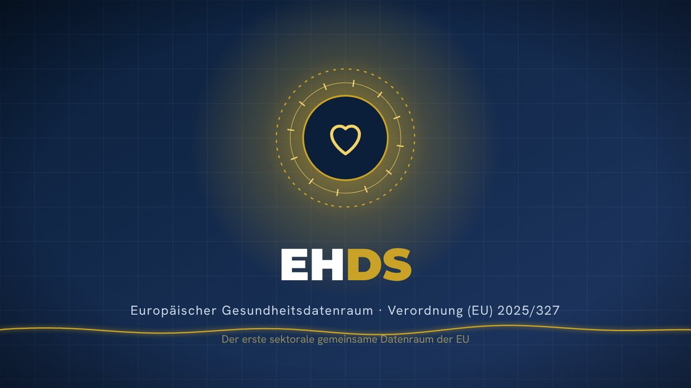

ARG
ARGARGOS › Vorschriften in 4 Minuten › EHDS
EHDS in 4 Minuten: Für Kliniken, Hersteller und Gesundheitsunternehmen
Der EHDS ist der erste sektorale gemeinsame Datenraum der EU. Von eingeschlossenen Daten zu Daten, die mit dem Patienten reisen. Für Kliniken und Hersteller ändert sich viel.

- 0:00Notaufnahme
- 0:13Die Verordnung
- 0:33Was sich ändert
- 0:53EHDS
- 1:02Funktionsweise
- 1:32Vorrangige Daten
- 1:47Zeitplan
- 2:07Rechte
- 2:22In Deutschland
- 2:40Was tun
Das Wichtigste
- 105 Artikel · in Kraft seit dem 26. März 2025
- 26.3.2027 allgemeine Geltung
- 2029 erste Datengruppe und Start der Sekundärnutzung
- 2031 zweite Datengruppe
- 2035 letzte Phasen
- Sofortiger Zugang Patienten sehen Daten und Zugriffe
- CE-Kennzeichnung Die Patientenakte als reguliertes Produkt
- Europäisches Format Austausch in einem Standard
Transkript
Vollständiger Text der Sprecherstimme
0:00 · Notaufnahme
Eine Patientin kommt in eine Notaufnahme im Ausland. Ihre Akte liegt zu Hause. Ihre Befunde, in einem anderen System. Ihre Medikation, auf Papier. Und der Arzt entscheidet im Blindflug.
0:13 · Die Verordnung
Der Europäische Gesundheitsdatenraum will das beenden. Eine Verordnung mit 105 Artikeln, in Kraft seit März 2025. Sie gibt jedem Zugang und Kontrolle über seine Gesundheitsdaten in Europa und macht Patientenakten interoperabel. Bei der Sekundärnutzung drohen bis zu zwanzig Millionen Euro Bußgeld.
0:33 · Was sich ändert
Für Kliniken und Hersteller ändert sich viel. Patienten sehen ihre Daten sofort und wissen, wer zugegriffen hat. Patientenaktensysteme werden zum Produkt mit CE-Kennzeichnung. Daten werden in einem gemeinsamen europäischen Format ausgetauscht. Weiterverwendung nur mit Genehmigung. Und jeder Zugriff wird protokolliert.
0:53 · EHDS
Der EHDS ist der erste sektorale gemeinsame Datenraum der EU. Von eingeschlossenen Daten zu Daten, die mit dem Patienten reisen.
1:02 · Funktionsweise
So funktioniert er. Primärnutzung: Patienten sehen, ergänzen, beschränken und teilen ihre Daten, auch im Ausland. Reguliertes Produkt: Interoperabilität und Zugriffsprotokoll, mit CE-Kennzeichnung. Sekundärnutzung: Zugangsstellen genehmigen Forschung, Innovation und KI. Immer in sicheren Verarbeitungsumgebungen, standardmäßig anonymisiert. Und nie, um zu diskriminieren oder Menschen zu reidentifizieren.
1:32 · Vorrangige Daten
Die vorrangigen Daten kommen in zwei Gruppen. Zuerst die Patientenkurzakte, das E-Rezept und die elektronische Abgabe. Dann Bilder und Laborbefunde, und Entlassberichte. Alles im europäischen Austauschformat für Patientenakten.
1:47 · Zeitplan
Der Zeitplan ist lang, aber er läuft. 26. März 2027: allgemeine Geltung. 2029: die erste Datengruppe in allen Staaten und der Start der Sekundärnutzung. 2031: die zweite Gruppe. Und 2035: die letzten Phasen.
2:07 · Rechte
Patienten gewinnen Rechte. Sofortiger und kostenloser Zugang. Ergänzen und Berichtigung verlangen. Daten zu anderen Ärzten mitnehmen, auch im Ausland. Bestimmen, wer was sieht. Und wissen, wer zugegriffen hat, und wann.
2:22 · In Deutschland
Deutschland hat vorgelegt: das Gesundheitsdatennutzungsgesetz regelt bereits die Nutzung von Gesundheitsdaten für die Forschung. Das Forschungsdatenzentrum Gesundheit beim BfArM stellt Daten bereit. Die elektronische Patientenakte für alle wird ausgerollt. Der EHDS baut darauf auf.
2:40 · Was tun
Was jetzt zu tun ist. Systeme inventarisieren, Interoperabilität und Protokoll vorbereiten, Daten für die Weiterverwendung ordnen. ARGOS prüft EHDS und DSGVO zugleich, mit aktiven Tests an den realen Systemen und ohne dass Daten die Klinik verlassen. EHDS: Gesundheitsdaten im Dienst der Patienten.
Häufige Fragen
Was ist EHDS?
Der EHDS ist der erste sektorale gemeinsame Datenraum der EU. Von eingeschlossenen Daten zu Daten, die mit dem Patienten reisen. Der Europäische Gesundheitsdatenraum will das beenden. Eine Verordnung mit 105 Artikeln, in Kraft seit März 2025. Sie gibt jedem Zugang und Kontrolle über seine Gesundheitsdaten in Europa und macht Patientenakten interoperabel. Bei der Sekundärnutzung drohen bis zu zwanzig Millionen Euro Bußgeld.
Was verlangt EHDS?
So funktioniert er. Primärnutzung: Patienten sehen, ergänzen, beschränken und teilen ihre Daten, auch im Ausland. Reguliertes Produkt: Interoperabilität und Zugriffsprotokoll, mit CE-Kennzeichnung. Sekundärnutzung: Zugangsstellen genehmigen Forschung, Innovation und KI. Immer in sicheren Verarbeitungsumgebungen, standardmäßig anonymisiert. Und nie, um zu diskriminieren oder Menschen zu reidentifizieren.
Welche Termine sind wichtig?
Der Zeitplan ist lang, aber er läuft. 26. März 2027: allgemeine Geltung. 2029: die erste Datengruppe in allen Staaten und der Start der Sekundärnutzung. 2031: die zweite Gruppe. Und 2035: die letzten Phasen.
Was gilt in Deutschland?
Für Kliniken und Hersteller ändert sich viel. Patienten sehen ihre Daten sofort und wissen, wer zugegriffen hat. Patientenaktensysteme werden zum Produkt mit CE-Kennzeichnung. Daten werden in einem gemeinsamen europäischen Format ausgetauscht. Weiterverwendung nur mit Genehmigung. Und jeder Zugriff wird protokolliert. Deutschland hat vorgelegt: das Gesundheitsdatennutzungsgesetz regelt bereits die Nutzung von Gesundheitsdaten für die Forschung. Das Forschungsdatenzentrum Gesundheit beim BfArM stellt Daten bereit. Die elektronische Patientenakte für alle wird ausgerollt. Der EHDS baut darauf auf.
Was sollte ein Unternehmen jetzt tun?
Was jetzt zu tun ist. Systeme inventarisieren, Interoperabilität und Protokoll vorbereiten, Daten für die Weiterverwendung ordnen. ARGOS prüft EHDS und DSGVO zugleich, mit aktiven Tests an den realen Systemen und ohne dass Daten die Klinik verlassen. EHDS: Gesundheitsdaten im Dienst der Patienten.
Offizielle Quellen
Weiter mit
 KI-Verordnung
KI-VerordnungKI-Verordnung in 4 Minuten: Deutschland: voll durchsetzbar
 NIS2
NIS2NIS2 in 4 Minuten: Deutschland: gilt jetzt, ohne Schonfrist
 Data Act und DGA
Data Act und DGAData Act und DGA in 4 Minuten: Deutschland: eine Behörde mit Biss
Sprecherstimme und Musik mit künstlicher Intelligenz erzeugt (Art. 50 KI-Verordnung). Allgemeine Information, keine Rechtsberatung; Stand November 2026, nach den Regulierungsdatenblättern von Software in a Box. Videoclips lizenziert über Envato.
Zum Einbinden dieser Präsentation in eine andere Website: <iframe src="https://argos.softwareinabox.eu/de/vorschriften/ehds/presentacion/?embed=1" width="960" height="540" allow="autoplay; fullscreen" title="EHDS in 4 Minuten: Für Kliniken, Hersteller und Gesundheitsunternehmen"></iframe> mit einem Link auf diese Seite.
Auch verfügbar auf: EspañolFrançaisFrançais (Belgique)ItalianoNederlandsNederlands (België)PortuguêsDansk